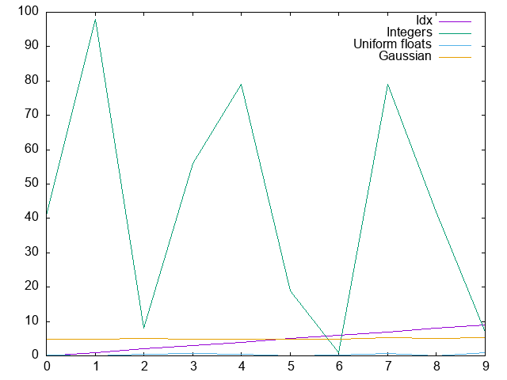
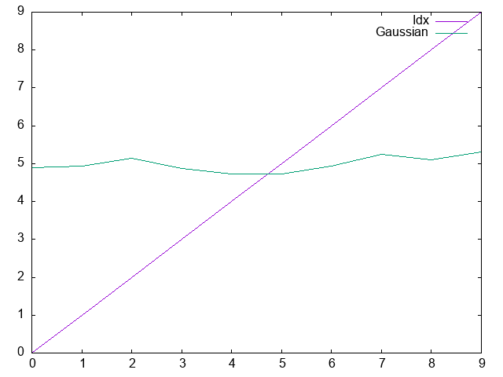
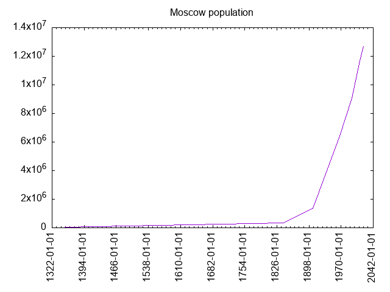

Lisp Project of the Day
teddy
You can support this project by donating at:


Or see the list of project sponsors.
teddy
| Documentation | 😀 |
| Docstrings | 😀 |
| Tests | 🤨 |
| Examples | 😀 |
| RepositoryActivity | 😀 |
| CI | 😀 |
I always wanted to work from Common Lisp with data like we do in Python. That is how does Teddy born.
Teddy make it possible to define a data frame full of data, to slice it in different ways, to join data frames, see some statistics about the data and render plots.
This is a proof of the concept and API will be changed. Check the ChangeLog.md to learn about new abilities and refactoring details.
Here is how we can create a simple data frame:
POFTHEDAY> (teddy/data-frame:make-data-frame
'("Idx" "Integers" "Uniform floats" "Gaussian")
:rows
(loop repeat 10
for idx upfrom 0
collect (list idx
(random 100)
(random 1.0)
(statistics:random-normal
:mean 5.0
:sd 0.2))))
+-----+----------+----------------+----------+
| Idx | Integers | Uniform floats | Gaussian |
+-----+----------+----------------+----------+
| 0 | 41 | 0.27 | 4.89d0 |
| 1 | 98 | 0.08 | 4.93d0 |
| 2 | 8 | 0.45 | 5.15d0 |
| 3 | 56 | 0.63 | 4.87d0 |
| 4 | 79 | 0.42 | 4.72d0 |
| 5 | 19 | 0.04 | 4.73d0 |
| 6 | 1 | 0.34 | 4.93d0 |
| 7 | 79 | 0.60 | 5.25d0 |
| 8 | 42 | 0.08 | 5.10d0 |
| 9 | 7 | 0.86 | 5.31d0 |
+-----+----------+----------------+----------+Now we can slice it by columns, rows or both:
POFTHEDAY> (teddy/data-frame:head *d* 2)
+-----+----------+----------------+----------+
| Idx | Integers | Uniform floats | Gaussian |
+-----+----------+----------------+----------+
| 0 | 41 | 0.27 | 4.89d0 |
| 1 | 98 | 0.08 | 4.93d0 |
+-----+----------+----------------+----------+
POFTHEDAY> (teddy/data-frame:tail *d* 2)
+-----+----------+----------------+----------+
| Idx | Integers | Uniform floats | Gaussian |
+-----+----------+----------------+----------+
| 8 | 42 | 0.08 | 5.10d0 |
| 9 | 7 | 0.86 | 5.31d0 |
+-----+----------+----------------+----------+
POFTHEDAY> (teddy/data-frame:slice
*d*
:columns '("idx" "gaussian"))
+-----+----------+
| Idx | Gaussian |
+-----+----------+
| 0 | 4.89d0 |
| 1 | 4.93d0 |
| 2 | 5.15d0 |
| 3 | 4.87d0 |
| 4 | 4.72d0 |
| 5 | 4.73d0 |
| 6 | 4.93d0 |
| 7 | 5.25d0 |
| 8 | 5.10d0 |
| 9 | 5.31d0 |
+-----+----------+
POFTHEDAY> (teddy/data-frame:slice *d*
:columns '("idx" "gaussian")
:from 4
:to 6)
+-----+----------+
| Idx | Gaussian |
+-----+----------+
| 4 | 4.72d0 |
| 5 | 4.73d0 |
+-----+----------+Also, we might want to see some descriptive statistical data about our data frame. This is pretty easy with Teddy:
POFTHEDAY> (teddy/stats:stats *d*)
+----------------+--------+--------+--------+--------+--------+-------+-------+---------+
| Column | Min | p25 | p50 | p75 | Max | Mean | SD | Sum |
+----------------+--------+--------+--------+--------+--------+-------+-------+---------+
| Idx | 0 | 2 | 4.50 | 7 | 9 | 4.50 | 3.03 | 45 |
| Integers | 1 | 8 | 41.50 | 79 | 98 | 43.00 | 34.40 | 430 |
| Uniform floats | 0.04 | 0.08 | 0.38 | 0.60 | 0.86 | 0.38 | 0.27 | 3.75 |
| Gaussian | 4.72d0 | 4.87d0 | 4.93d0 | 5.15d0 | 5.31d0 | 4.99 | 0.20 | 49.88d0 |
+----------------+--------+--------+--------+--------+--------+-------+-------+---------+Probably, we can make some extandable protocol to calculate other properties.
Data frame stores data as columns. Each column is a vector of a particular type. If you want to process a row, you can create an iterator and use it to go through rows like that:
POFTHEDAY> (loop with iterator = (teddy/data-frame:make-iterator *d*)
for row = (funcall iterator)
while row
do (format t "Row: ~S~%"
row))
Row: (0 41 0.26806116 4.887522971759381d0)
Row: (1 98 0.081421256 4.928584134866222d0)
Row: (2 8 0.45165908 5.147222819038834d0)
Row: (3 56 0.62647486 4.874349648519968d0)
Row: (4 79 0.41671002 4.7239718274963485d0)
Row: (5 19 0.04152584 4.727268395019779d0)
Row: (6 1 0.3369373 4.93339303609316d0)
Row: (7 79 0.59791017 5.2466443304900965d0)
Row: (8 42 0.076958776 5.103448455243024d0)
Row: (9 7 0.85732913 5.310498824093041d0)Plotting facilities as rudimentary, but should be improved.. All functions related to plotting are in the teddy/plot package. Right now GNUPlot is used via eazy-gnuplot library.
Here is how we can plot our data from all columns:
POFTHEDAY> (teddy/plot:plot *d*
"docs/media/0099/simple-plot.png")
If we want to plot only gaussian, then it will be wrong, because we need a histogram type of plot. This feature is "to be done":
POFTHEDAY> (teddy/plot:plot
(teddy/data-frame:slice *d*
:columns '("Idx" "Gaussian"))
"docs/media/0099/gaussian.png")
Another type of plots Teddy is able to render right now is a "timeseries".
Let's plot how does Moscow's population was changed over years:
POFTHEDAY> (defparameter *moscow-population*
(teddy/data-frame:make-data-frame
'("Date" "Population")
:rows '(("1350-01-01" 30000)
("1840-01-01" 349000)
("1907-01-01" 1345700)
("1967-01-01" 6422000)
("1994-01-01" 9066000)
("2010-01-01" 11500000)
("2020-01-01" 12680000))))
*MOSCOW-POPULATION*
POFTHEDAY> (teddy/plot:plot-timeseries
*moscow-population* "docs/media/0099/moscow2.png"
:title "Moscow population")
"docs/media/0099/moscow.png"
Right now, Teddy installable only from Ultralisp, because it is the best place to host unstable fast-changing Common Lisp libraries.
Join the effort to make Teddy really useful for data analysis!
Send your pull-requests to:
Brought to you by 40Ants under